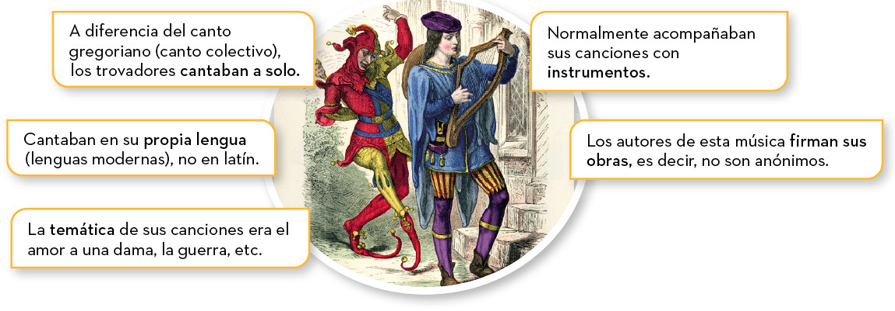

Música profana monofónica
Cuando se habla de música medieval puede pensarse que solo se interpretaba música en la iglesia, pero no es así. La música profana se desarrolló principalmente gracias a los trovadores y troveros en los siglos XII y XIII, en especial en Francia. Los trovadores y troveros fueron gente noble y culta. Componían tanto la letra (poesía) como la música de sus canciones, aunque estas solían interpretarlas los juglares o ministriles.

ESCUCHAMOS PERO NO JUZGAMOS: PROFANA EDAD MEDIA
Escucha el siguiente fragmento de Chanson (música profana monofónica) y escribe en tu Pasaporte Musical las diferencias que aprecias con respecto al canto gregoriano.
(Ten en cuenta que la composición original es del siglo XII y solo contiene una sola línea de melodía, sin armonía o acordes. No obstante, al ser profana es muy probable que se interpretara con instrumentos, los cuales solían tocar la misma melodía que la voz, por lo que sigue siendo de textura monofónica).
Conon de Béthune - Tant ai aimé (Tanto he amado)
De la audición anterior se pueden deducir las características más importantes de la música de los trovadores:
